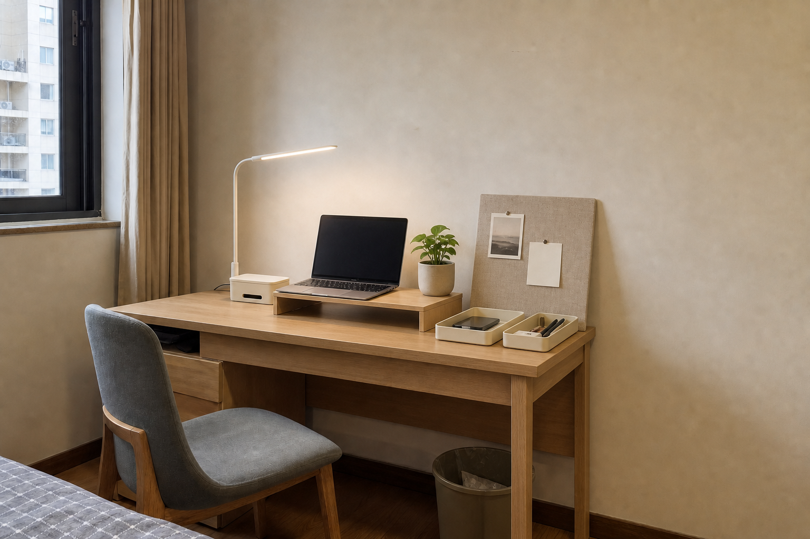

DOUYIN × HOME × AI
把刷到的喜欢，
真正搬进家。
圈选一段家居灵感，拍下真实书桌。AI 会读懂空间、预算与租房限制，给出可预览、可购买、可执行的焕新方案。
- 01
- 保留原空间结构
- 02
- 预算与限制双校验
- 03
- 内容、商品一站承接

不打孔
✓ 已满足
✓ 已满足
结构保持率
96%
96%
AI
适配
适配
STEP 01 · INSPIRATION
你想搬走哪一种感觉？
演示中用 3 组结构化灵感代替真实抖音接口。选择后会提取可迁移元素，而不是照搬画面。
识别风格日式自然
主色燕麦白 浅橡木
可迁移元素夹灯 / 桌上架 / 亚麻板
不照搬墙面层板（需打孔）
STEP 02 · ROOM
让 AI 看看你的书桌
请尽量拍到桌面、墙面、插座和椅子。单张照片只做尺度估算，关键尺寸仍需复测。
AI 空间初诊生成前预估
82识别置信参考
- 01桌面被零碎物品切散建议先建立“抬高—收纳—留白”三层关系
- 02墙面利用率偏低租房限制下，优先使用倚墙软木板
- 03左侧自然光充足台灯宜放左后方，避免直射屏幕
⚠ 深度与插座位置为图像估算，购买前请复测。
STEP 03 · CONSTRAINTS
好看之前，先把生活放进去
硬约束会进入规划和结果校验；审美偏好只参与排序，不会覆盖安全与预算。
本次预算上限
¥ 500
轻改 ¥200进阶 ¥1000
收纳34%
照明28%
氛围22%
余量16%
角
AI PLANNING
正在把灵感适配到你的空间…
理解空间匹配商品生成方案校验结果
连接没有完成
这次没有伪装成成功。
请确认本地后端已经启动。
YOUR ROOM REMIX
不是照搬，是刚好适合。
DEMO
空间识别：离线样例
完成上传后才会请求 Agent Plan
DEMO
效果图：预生成样例
真实生成后会单独显示 Seedream LIVE
AI 诊断
你的桌面有足够横向空间，左侧采光较好；在不打孔、保留桌椅的条件下，最有效的改动是抬高屏幕、收拢线材，并用倚墙织物板建立视觉焦点。
依据：本地空间档案 + Demo 灵感 + 用户硬约束
改造前
方案预览
↔
PLAN 01
原木呼吸感
保留桌椅和自然采光，用低矮桌上架重整视觉中心。亚麻板以倚墙方式使用，满足租房免打孔限制。
总预算¥486
预计用时35 分钟
安装难度简单
01
共 6 件 · ¥486照着买
02
约 35 分钟照着摆
03
抖音样例内容跟着学
▶
租房书桌如何做到
“有氛围但不费力”@一平米生活家 · 01:26
“有氛围但不费力”@一平米生活家 · 01:26
推荐理由：同为 1.2m 靠墙书桌，包含免打孔布置步骤和真实预算。
04
最后更新：刚刚可信校验
- 通过结构保持墙体、窗户、桌椅未改变
- 通过预算校验¥486 ≤ 预算 ¥500
- 通过商品可得6/6 件样例商品有库存
- 复测尺寸风险购买前请确认桌深 ≥ 55cm